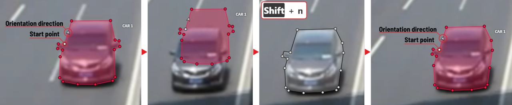
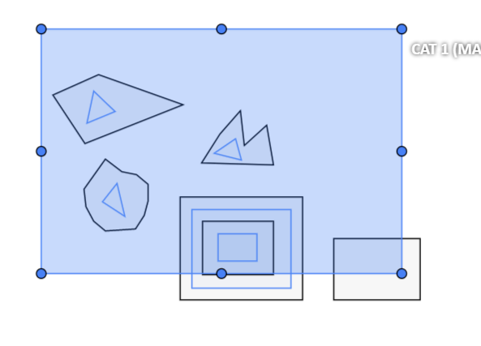
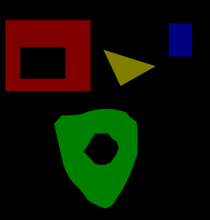
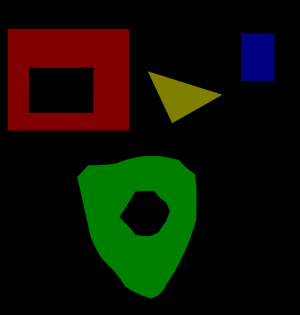

This the multi-page printable view of this section. Click here to print.
Annotation with polygons
- 1: Manual drawing
- 2: Drawing using automatic borders
- 3: Edit polygon
- 4: Track mode with polygons
- 5: Creating masks
1 - Manual drawing
It is used for semantic / instance segmentation.
Before starting, you need to select Polygon on the controls sidebar and choose the correct Label.

- Click
Shapeto enter drawing mode. There are two ways to draw a polygon: either create points by clicking or by dragging the mouse on the screen while holdingShift.
| Clicking points | Holding Shift+Dragging |
|---|---|
 |
 |
- When
Shiftisn’t pressed, you can zoom in/out (when scrolling the mouse wheel) and move (when clicking the mouse wheel and moving the mouse), you can also delete the previous point by right-clicking on it. - You can use the
Selected opacityslider in theObjects sidebarto change the opacity of the polygon. You can read more in the Objects sidebar section. - Press
Nagain or click theDonebutton on the top panel for completing the shape. - After creating the polygon, you can move the points or delete them by right-clicking and selecting
Delete pointor clicking with pressedAltkey in the context menu.
2 - Drawing using automatic borders
You can use auto borders when drawing a polygon. Using automatic borders allows you to automatically trace the outline of polygons existing in the annotation.
-
To do this, go to settings -> workspace tab and enable
Automatic Borderingor pressCtrlwhile drawing a polygon.
-
Start drawing / editing a polygon.
-
Points of other shapes will be highlighted, which means that the polygon can be attached to them.
-
Define the part of the polygon path that you want to repeat.

-
Click on the first point of the contour part.
-
Then click on any point located on part of the path. The selected point will be highlighted in purple.

-
Click on the last point and the outline to this point will be built automatically.
Besides, you can set a fixed number of points in the Number of points field, then
drawing will be stopped automatically. To enable dragging you should right-click
inside the polygon and choose Switch pinned property.
Below you can see results with opacity and black stroke:

If you need to annotate small objects, increase Image Quality to
95 in Create task dialog for your convenience.
3 - Edit polygon
To edit a polygon you have to click on it while holding Shift, it will open the polygon editor.
-
In the editor you can create new points or delete part of a polygon by closing the line on another point.
-
When
Intelligent polygon croppingoption is activated in the settings, СVAT considers two criteria to decide which part of a polygon should be cut off during automatic editing.- The first criteria is a number of cut points.
- The second criteria is a length of a cut curve.
If both criteria recommend to cut the same part, algorithm works automatically, and if not, a user has to make the decision. If you want to choose manually which part of a polygon should be cut off, disable
Intelligent polygon croppingin the settings. In this case after closing the polygon, you can select the part of the polygon you want to leave.
-
You can press
Escto cancel editing.
4 - Track mode with polygons
Polygons in the track mode allow you to mark moving objects more accurately other than using a rectangle (Tracking mode (basic); Tracking mode (advanced)).
-
To create a polygon in the track mode, click the
Trackbutton.
-
Create a polygon the same way as in the case of Annotation with polygons. Press
Nor click theDonebutton on the top panel to complete the polygon. -
Pay attention to the fact that the created polygon has a starting point and a direction, these elements are important for annotation of the following frames.
-
After going a few frames forward press
Shift+N, the old polygon will disappear and you can create a new polygon. The new starting point should match the starting point of the previously created polygon (in this example, the top of the left mirror). The direction must also match (in this example, clockwise). After creating the polygon, pressNand the intermediate frames will be interpolated automatically.
-
If you need to change the starting point, right-click on the desired point and select
Set starting point. To change the direction, right-click on the desired point and select switch orientation.
There is no need to redraw the polygon every time using Shift+N,
instead you can simply move the points or edit a part of the polygon by pressing Shift+Click.
5 - Creating masks
Cutting holes in polygons
Currently, CVAT does not support cutting transparent holes in polygons. However, it is poissble to generate holes in exported instance and class masks. To do this, one needs to define a background class in the task and draw holes with it as additional shapes above the shapes needed to have holes:
The editor window:

Remember to use z-axis ordering for shapes by [-] and [+, =] keys.
Exported masks:


Notice that it is currently impossible to have a single instance number for internal shapes (they will be merged into the largest one and then covered by “holes”).
Creating masks
There are several formats in CVAT that can be used to export masks:
Segmentation Mask(PASCAL VOC masks)CamVidMOTSICDARCOCO(RLE-encoded instance masks, guide)TFRecord(over Datumaro, guide):Datumaro
An example of exported masks (in the Segmentation Mask format):
 

Important notices:
- Both boxes and polygons are converted into masks
- Grouped objects are considered as a single instance and exported as a single mask (label and attributes are taken from the largest object in the group)
Class colors
All the labels have associated colors, which are used in the generated masks. These colors can be changed in the task label properties:

Label colors are also displayed in the annotation window on the right panel, where you can show or hide specific labels (only the presented labels are displayed):

A background class can be:
- A default class, which is implicitly-added, of black color (RGB 0, 0, 0)
backgroundclass with any color (has a priority, name is case-insensitive)- Any class of black color (RGB 0, 0, 0)
To change background color in generated masks (default is black),
change background class color to the desired one.